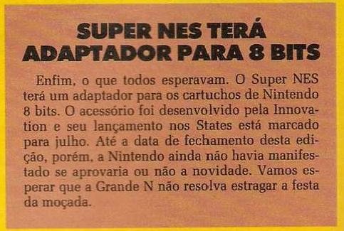
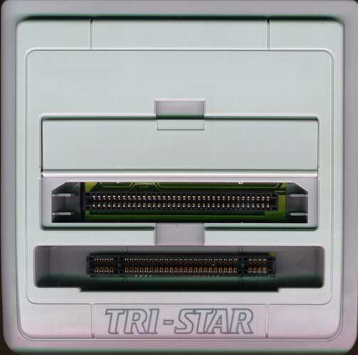
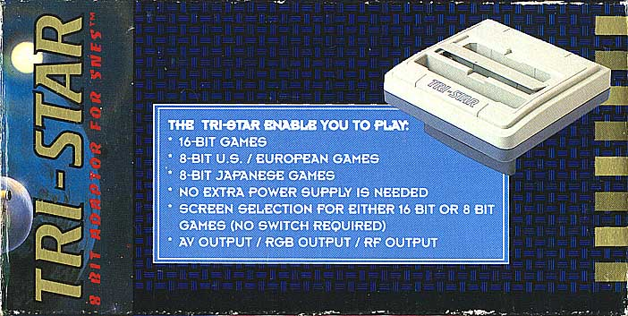

Nintendinho no Nintendão
 :::. Por Gigacom
:::. Por Gigacom
fonte: Ação Games nº 14
Eeeepa Giga, explica esse negocio direito! Uai!? Explicar o quê? É isso mesmo criatura! Saiu na Ação Games nº 14 que o Nintendão ia receber cartuchos do Nintendinho, oia só:

Como era de se esperar, isso foi pura
balela. O tal adaptador nunca apareceu, e anos mais tarde
só vimos uma coisa do tipo oficialmente, quando o Super Game Boy
foi enviado para a Terra pelos deuses através da Nintendo. Mas
essa não foi a única tentativa de fazer o SNES dar 8
passos pra trás, muitas outras empresas tentaram a proeza... e
conseguiram  . Olha a foto da geringonça:
. Olha a foto da geringonça:
|  |  |
| Clique nas imagens para enlargar. | |
Esse treco adiciona um e outro chip original do NES para funcionar no SNES, e se acopla na entrada de cartuchos do 16 bits. Até que funciona bem, porém não tããããããão bem assim para rodar alguns joguinhos mais parrudos, como Castlevania, Battletoads, e outros desses mais bonitinhos. Na transição do NES para o SNES, a Nintendo até chegou a cogitar a possibilidae de fazer o SNES retrocompatível com o irmão mais velho, assim como aconteceu com o Mega Drive, mas acabou deixando isso de lado rapidamente, deixando esse negocio de retrocompatibilidade ao cargo dos portáteis (Game Boy até o DS) e mais recentemente ao Wii, que tambem gosta de comer aqueles disquinhos do Game Cube.
Acesse o Trombone e comente sobre essa matéria!


{kind=link}
{kind=link}